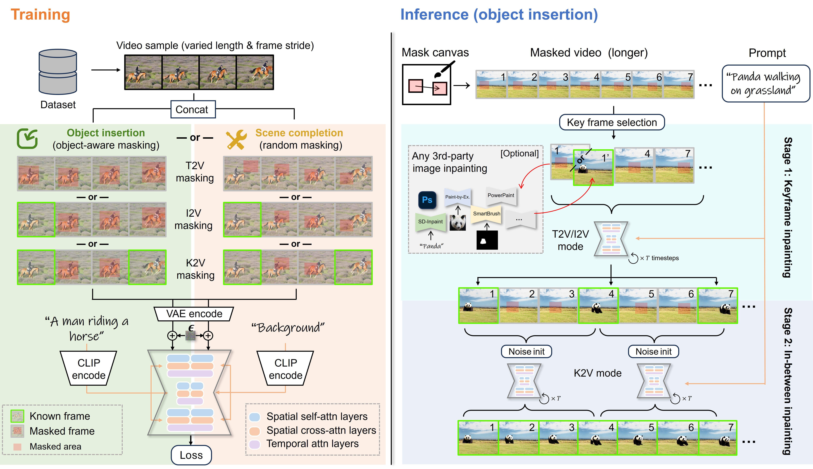

MTV-Inpaint: Multi-Task Long Video Inpainting
MTV-Inpaint: Multi-Task Long Video Inpainting
Abstract
Video inpainting involves modifying local regions within a video, ensuring spatial and temporal consistency. Most existing methods focus primarily on scene completion (i.e., filling missing regions) and lack the capability to insert new objects into a scene in a controllable manner. Fortunately, recent advancements in text-to-video (T2V) diffusion models pave the way for text-guided video inpainting. However, directly adapting T2V models for inpainting remains limited in unifying completion and insertion tasks, lacks input controllability, and struggles with long videos, thereby restricting their applicability and flexibility. To address these challenges, we propose MTV-Inpaint, a unified multi-task video inpainting framework capable of handling both traditional scene completion and novel object insertion tasks. To unify these distinct tasks, we design a dual-branch spatial attention mechanism in the T2V diffusion U-Net, enabling seamless integration of scene completion and object insertion within a single framework. In addition to textual guidance, MTV-Inpaint supports multimodal control by integrating various image inpainting models through our proposed image-to-video (I2V) inpainting mode. Additionally, we propose a two-stage pipeline that combines keyframe inpainting with in-between frame propagation, enabling MTV-Inpaint to effectively handle long videos with hundreds of frames. Extensive experiments demonstrate that MTV-Inpaint achieves state-of-the-art performance in both scene completion and object insertion tasks. Furthermore, it demonstrates versatility in derived applications such as multi-modal inpainting, object editing, removal, image object brush, and the ability to handle long videos.
Method
Overview of the proposed video inpainting model MTV-Inpaint.

During training, we employ dual spatial branch U-Net to handle both object insertion and scene completion tasks. For object insertion, we train the model using object-aware masks, while for scene completion, we use random masks. Simultaneously, we train the U-Net with three different frame masking modes: (1) Text-to-Video (T2V) mode: inpaints all frames by text prompt. (2) Image-to-Video (I2V) mode: inpaints subsequent frames based on a provided first frame and text prompt. (3) Keyframe-to-Video (K2V) mode: inpaints in-between frames based on two keyframes given at the beginning and end of a sequence.
During inference, our method supports various inpainting scenarios. It can perform basic T2V inpainting, or I2V inpainting, where the first frame is provided by a third-party image inpainting tool. For longer videos, we first inpaint keyframes using T2V or I2V modes, and then use the K2V mode to inpaint the remaining intermediate frames, as shown in the right side of Figure. This two-step pipeline ensures temporal consistency across the entire video.
 Object Insertion
Object Insertion
Insert object into video guided by text prompt.
Note: All the videos are in full-length.
|
A turtle swimming ... |
A camel walking ... |
A dog walking ... |
A duck swimming ... |
|
A dog dancing... |
A vintage car driving ... |
A panda walking... |
A tank driving... |
|
A robot dancing... |
A squirrel searching... |
A heron fishing... |
A puppy running... |
 Scene Completion
Scene Completion
Complete missing regions according to context.
Note: The missing regions are marked in red masks. All the videos are in full-length.
 Object Removal
Object Removal
Remove foreground object from a video.
Note: All the videos are in full-length.
 Object Editing
Object Editing
Edit the object apperance in a video.
Note: All the videos are in full-length.
|
A polar bear ... |
A swan in turtle shape ... |
A metal camel ... |
A car in cyber punk style ... |
|
An orange sports car ... |
A fox ... |
A robotic flamingo ... |
A robot walking ... |
|
A cat ... |
A metal rhino ... |
A female robot ... |
A black-and-white cow ... |
 Image Object Brush
Image Object Brush
Insert object into static image to make dynamic video
 Multi-modal Inpainting
Multi-modal Inpainting
Comparisons: Object insertion task
Comparisons: Scene completion task
BibTeX
@misc{yang2025mtvinpaint,
title={MTV-Inpaint: Multi-Task Long Video Inpainting},
author={Yang, Shiyuan and Gu, Zheng and Hou, Liang and Tao, Xin and Wan, Pengfei and Chen, Xiaodong and Liao, Jing},
year={2025},
eprint={2503.11412},
archivePrefix={arXiv},
primaryClass={cs.CV},
url={https://arxiv.org/abs/2503.11412},
}